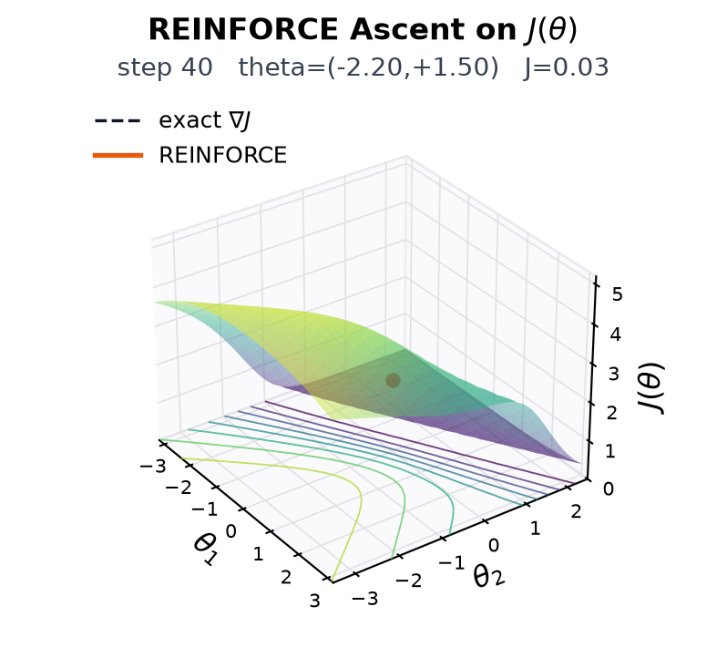
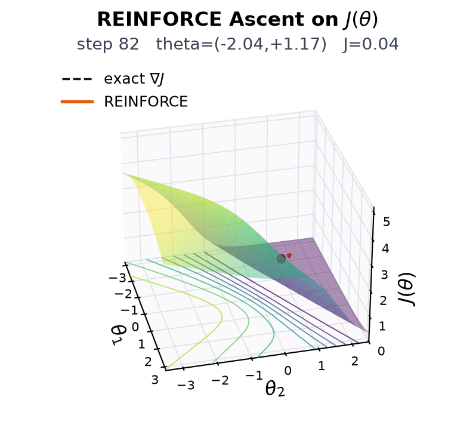
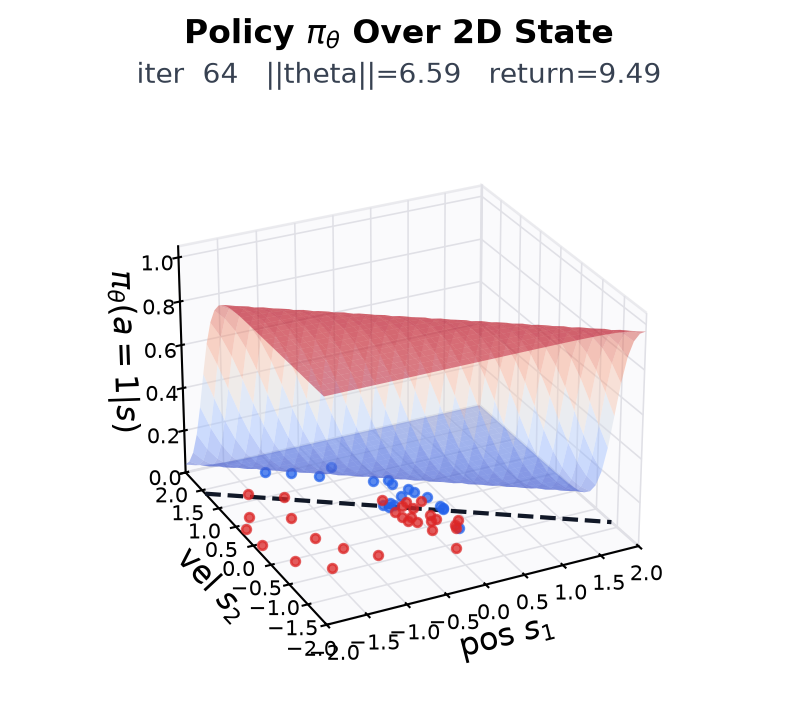
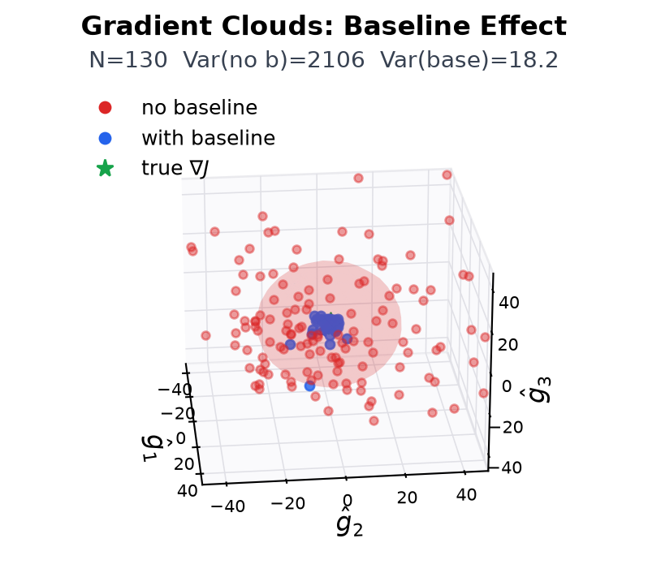
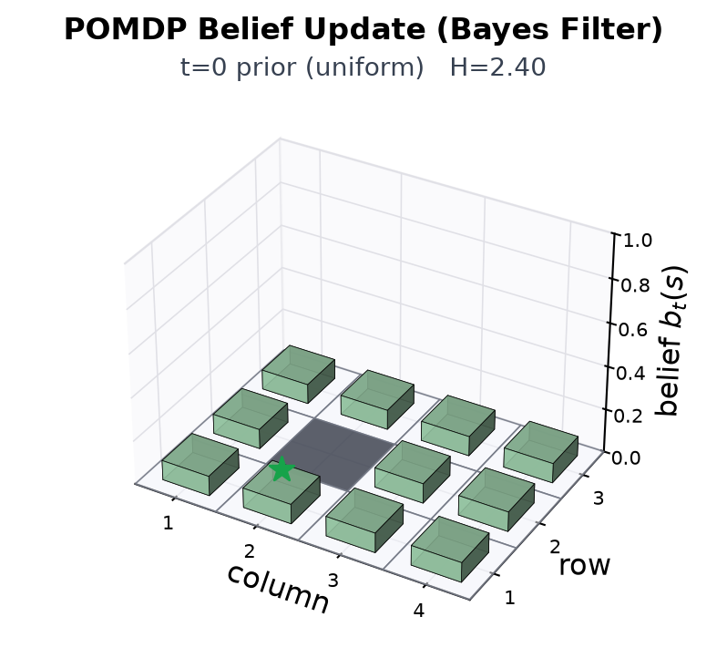
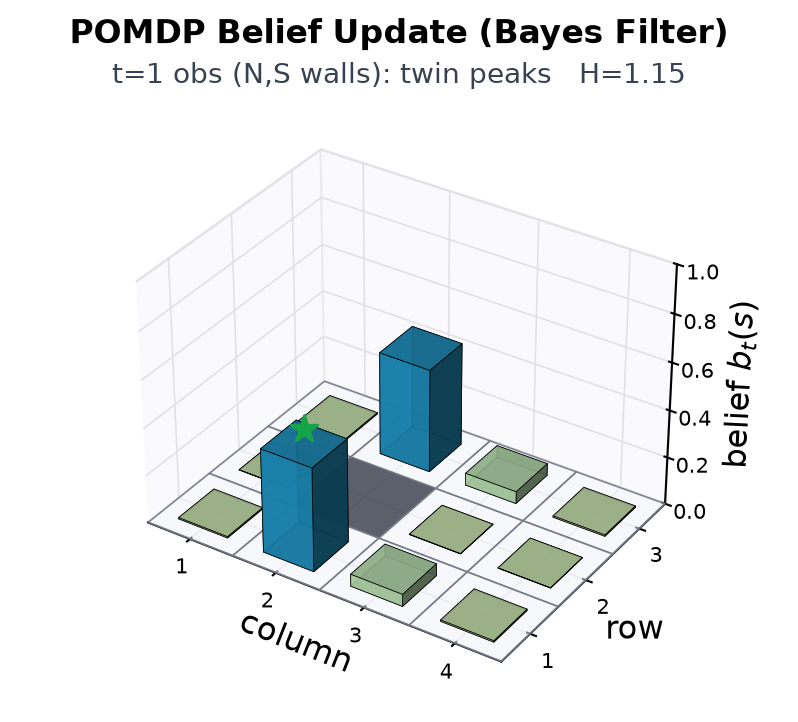
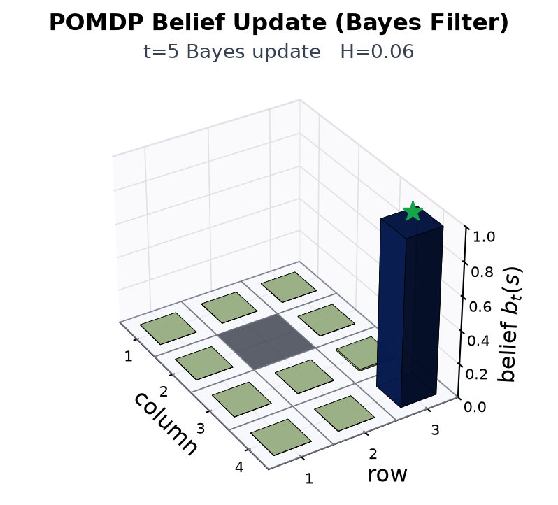

Policy Search, REINFORCE और POMDPs
Theory
इस lecture में: Direct policy search का विचार, value-based तरीकों से इसकी तुलना, parameterized stochastic policies (logistic और softmax), expected return objective \(J(\theta)\), log-derivative trick से REINFORCE का पूरा derivation (और transition probabilities कैसे कट जाती हैं), एक trajectory से unbiased gradient estimate, baseline से बिना bias जोड़े variance घटाना (\(E[\nabla_\theta \log \pi_\theta] = 0\)), reward-to-go, PEGASUS का विचार, POMDPs (observations, belief state और Bayes filter update), और policy search कब चुनना चाहिए।
1. एक line में idea
अब तक हमने Reinforcement Learning में पहले value function \(V^*\) या \(Q^*\) सीखा और फिर उस पर \(\arg\max_a\) लगाकर policy निकाली। Direct policy search इस बीच वाले कदम को छोड़ देता है: आप सीधे एक parameterized policy \(\pi_\theta(a \mid s)\) लिखते हैं और parameters \(\theta\) को इस तरह बदलते हैं कि कुल expected reward सबसे ज़्यादा हो जाए।
इस lecture का सबसे सुंदर नतीजा REINFORCE है। Log-derivative trick की मदद से आप दुनिया के transition model \(P_{sa}\) को जाने बिना, सिर्फ़ policy चलाकर मिले trajectories से expected return का unbiased gradient निकाल सकते हैं। और अगर दुनिया का असली state छुपा हो (POMDP), तो या तो आप observations से belief state बनाकर Bayes filter से update करते हैं, या सीधे observations पर policy search चलाते हैं।
2. Direct Policy Search: Setup और Stochastic Policies
मान लीजिए state \(s \in S\) (या feature vector \(\phi(s) \in \mathbb{R}^d\)) दिया है और आप \(\theta\) से तय होने वाली एक stochastic policy \(\pi_\theta(a \mid s)\) चुनते हैं। यहाँ \(\pi_\theta(a \mid s)\) वह probability है जिससे agent state \(s\) में action \(a\) लेता है, इसलिए हर \(s\) पर \(\sum_{a \in A} \pi_\theta(a \mid s) = 1\)।
Deterministic policy \(\pi(s) \in A\) की जगह stochastic policy क्यों? इसके दो बड़े कारण हैं:
- Smoothness और gradient: अगर policy अचानक एक action से दूसरे पर कूदती है, तो \(\theta\) में छोटे बदलाव से discrete छलाँग लगती है और gradient काम नहीं करता। Stochastic policy में \(\pi_\theta(a \mid s)\) parameters \(\theta\) का smooth और differentiable function होता है, इसलिए expected return \(J(\theta)\) पर सीधे gradient ascent लगाया जा सकता है।
- Exploration और अधूरी जानकारी: Stochastic policy अपने आप अलग-अलग actions आज़माती है। आगे हम देखेंगे कि POMDPs और कुछ games में सबसे अच्छी policy खुद stochastic हो सकती है।
दो आम policy परिवार
(क) Logistic policy (दो actions के लिए)। जब \(A = \{0, 1\}\) हो (जैसे cart-pole में बाएँ या दाएँ धक्का देना) और state features \(\phi(s) \in \mathbb{R}^d\) हों, तो आप logistic sigmoid \(\sigma(z) = \frac{1}{1 + e^{-z}}\) इस्तेमाल करते हैं:
\[\pi_\theta(a = 1 \mid s) = \sigma(\theta^T \phi(s)) = \frac{1}{1 + e^{-\theta^T \phi(s)}}, \qquad \pi_\theta(a = 0 \mid s) = 1 - \sigma(\theta^T \phi(s))\]
जब \(\|\theta\|\) छोटा हो तो दोनों actions लगभग 0.5-0.5 probability से चुने जाते हैं। जैसे-जैसे \(\|\theta\|\) बढ़ता है, यही smooth surface तेज़ होकर लगभग deterministic boundary बन जाती है।
(ख) Softmax policy (\(k\) actions के लिए)। जब \(A = \{1, 2, \dots, k\}\) में दो से ज़्यादा actions हों (जैसे gridworld में चार दिशाएँ), तो हर state-action जोड़े के features \(\phi(s, a) \in \mathbb{R}^d\) (या हर action का अलग weight vector \(\theta_a\)) लेकर softmax लिखा जाता है:
\[\pi_\theta(a \mid s) = \frac{\exp(\theta^T \phi(s, a))}{\sum_{a' \in A} \exp(\theta^T \phi(s, a'))}\]
यह हर action को धनात्मक probability देता है और जोड़ हमेशा 1 रखता है। इन दोनों परिवारों के log-probabilities के gradients बहुत साफ़ आते हैं, जो आगे REINFORCE में सीधे काम आएँगे।
3. Objective Function: Expected Return
मान लीजिए एक episode \(T\) कदमों तक चलता है (horizon \(T\))। एक पूरी trajectory (या rollout) यह अनुक्रम है:
\[\tau = (s_0, a_0, s_1, a_1, \dots, s_{T-1}, a_{T-1}, s_T)\]
इस trajectory का कुल return (total payoff) है:
\[R(\tau) = \sum_{t=0}^{T-1} \gamma^t R(s_t, a_t)\]
Finite-horizon के सीधे derivation में अक्सर \(\gamma = 1\) रखकर \(R(\tau) = \sum_{t=0}^{T-1} R(s_t, a_t)\) लिखा जाता है; \(\gamma < 1\) होने पर भी नीचे का हर कदम बिल्कुल वैसे ही चलता है।
Policy \(\pi_\theta\) के तहत किसी खास trajectory \(\tau\) के घटने की probability \(p_\theta(\tau)\) क्या है? दुनिया पहले initial distribution \(\mu(s_0)\) से \(s_0\) चुनती है, फिर हर कदम पर agent \(\pi_\theta(a_t \mid s_t)\) से \(a_t\) चुनता है और दुनिया \(P_{s_t a_t}(s_{t+1})\) से अगला state निकालती है:
\[p_\theta(\tau) = \mu(s_0) \prod_{t=0}^{T-1} \pi_\theta(a_t \mid s_t)\, P_{s_t a_t}(s_{t+1})\]
हमारा लक्ष्य है expected return को maximize करना:
\[J(\theta) = E_{\tau \sim p_\theta}\!\left[ R(\tau) \right] = \sum_{\tau} p_\theta(\tau)\, R(\tau)\]
(Continuous states या actions हों तो \(\sum_\tau\) की जगह \(\int d\tau\) आ जाता है, बाकी सब वैसा ही रहता है।) हम \(\theta\) को gradient ascent से सुधारना चाहते हैं: \(\theta := \theta + \alpha \nabla_\theta J(\theta)\)। पर मुश्किल यह है कि \(p_\theta(\tau)\) के अंदर दुनिया का अज्ञात transition model \(P_{sa}\) बैठा है, और सारी संभव trajectories पर जोड़ लेना असंभव है।
4. REINFORCE Derivation: Log-Derivative Trick
यहाँ calculus की एक छोटी-सी पर बेहद शक्तिशाली पहचान काम आती है। किसी भी धनात्मक differentiable function \(p_\theta(\tau)\) के लिए \(\nabla_\theta \log p_\theta(\tau) = \frac{\nabla_\theta p_\theta(\tau)}{p_\theta(\tau)}\), यानी:
\[\nabla_\theta p_\theta(\tau) = p_\theta(\tau)\, \nabla_\theta \log p_\theta(\tau)\]
इसे log-derivative trick (या likelihood-ratio trick) कहते हैं। इसे \(\nabla_\theta J(\theta)\) में लगाएँ:
\[\begin{aligned} \nabla_\theta J(\theta) &= \nabla_\theta \sum_{\tau} p_\theta(\tau)\, R(\tau) \\ &= \sum_{\tau} \left( \nabla_\theta p_\theta(\tau) \right) R(\tau) \\ &= \sum_{\tau} p_\theta(\tau) \left( \nabla_\theta \log p_\theta(\tau) \right) R(\tau) \\ &= E_{\tau \sim p_\theta}\!\left[ R(\tau)\, \nabla_\theta \log p_\theta(\tau) \right] \end{aligned}\]
अब जादू देखिए: \(\log p_\theta(\tau)\) को खोलकर लिखें। गुणनफल \(\prod\) अब जोड़ \(\sum\) बन जाता है:
\[\log p_\theta(\tau) = \log \mu(s_0) + \sum_{t=0}^{T-1} \log \pi_\theta(a_t \mid s_t) + \sum_{t=0}^{T-1} \log P_{s_t a_t}(s_{t+1})\]
अब दोनों ओर \(\theta\) के सापेक्ष gradient \(\nabla_\theta\) लें। Initial state distribution \(\mu(s_0)\) में \(\theta\) नहीं है, और दुनिया की transition probabilities \(P_{s_t a_t}(s_{t+1})\) में भी \(\theta\) कहीं नहीं है! इसलिए उनके derivatives शून्य हो जाते हैं:
\[\nabla_\theta \log p_\theta(\tau) = \sum_{t=0}^{T-1} \nabla_\theta \log \pi_\theta(a_t \mid s_t)\]
इसे वापस ऊपर रखने पर Policy Gradient Theorem (REINFORCE रूप) मिलता है:
\[\nabla_\theta J(\theta) = E_{\tau \sim p_\theta}\!\left[ R(\tau) \sum_{t=0}^{T-1} \nabla_\theta \log \pi_\theta(a_t \mid s_t) \right]\]
इस सूत्र पर रुककर गौर करें: transition probabilities \(P_{sa}\) पूरी तरह कट चुकी हैं! Gradient निकालने के लिए आपको दुनिया के physics या transition matrices का कोई formula नहीं चाहिए। बस दुनिया में (या simulator में) \(\pi_\theta\) चलाकर trajectory sample करना आना चाहिए।
एक trajectory से Unbiased Estimate और इसका मतलब
क्योंकि \(\nabla_\theta J(\theta)\) एक expectation है, अगर आप वर्तमान policy \(\pi_\theta\) से सिर्फ़ एक trajectory \(\tau\) चलाएँ, तो
\[\hat{g}(\tau) = R(\tau) \sum_{t=0}^{T-1} \nabla_\theta \log \pi_\theta(a_t \mid s_t)\]
सच्चे gradient का एक unbiased estimate है, यानी \(E_{\tau \sim p_\theta}[\hat{g}(\tau)] = \nabla_\theta J(\theta)\)। \(m\) trajectories का औसत लेने पर noise और कम हो जाता है।
Update नियम \(\theta := \theta + \alpha \hat{g}(\tau)\) का सहज मतलब बहुत साफ़ है:
- अगर trajectory का कुल return \(R(\tau) > 0\) (अच्छा) आया, तो हम उन सारे actions \(a_t\) की log-probability \(\log \pi_\theta(a_t \mid s_t)\) बढ़ाते हैं जो इस trajectory में लिए गए थे।
- अगर \(R(\tau) < 0\) (खराब) आया, तो हम उन्हीं actions की probability घटा देते हैं।
Score function \(\nabla_\theta \log \pi_\theta(a \mid s)\) कैसा दिखता है?
- Logistic policy के लिए: \(\nabla_\theta \log \pi_\theta(a \mid s) = \left(a - \sigma(\theta^T \phi(s))\right) \phi(s)\)।
- Softmax policy के लिए:
\[\nabla_\theta \log \pi_\theta(a \mid s) = \phi(s, a) - \sum_{a' \in A} \pi_\theta(a' \mid s)\, \phi(s, a') = \phi(s, a) - E_{a' \sim \pi_\theta(\cdot \mid s)}\!\left[\phi(s, a')\right]\]
यानी चुने गए action के features की तरफ़ बढ़ो, और औसत features से दूर हटो।
5. Variance की समस्या, Baseline और Reward-to-Go
अकेला REINFORCE unbiased तो है, पर उसका variance बहुत बड़ा हो सकता है। एक आसान उदाहरण सोचिए: मान लीजिए हर trajectory का return धनात्मक है, जैसे कुछ trajectories में \(R(\tau) = +98\) मिलता है और कुछ में \(R(\tau) = +102\)। बिना किसी सुधार के \(R(\tau)\) दोनों में धनात्मक है, इसलिए update हर trajectory के actions की probability ऊपर धकेलने की कोशिश करता है (एक को 98 गुना, दूसरे को 102 गुना)। इससे अलग-अलग trajectories के gradients बेतहाशा इधर-उधर भागते हैं। हमें असल में यह चाहिए था कि औसत (\(100\)) से ऊपर वाली trajectory को बढ़ावा मिले और \(100\) से नीचे वाली को दबाया जाए।
Baseline: बिना Bias जोड़े Variance घटाना
क्या हम \(R(\tau)\) में से कोई संख्या \(b\) (baseline) घटा सकते हैं, और फिर भी gradient unbiased रहे? हाँ! इसकी वजह यह मूलभूत पहचान है कि किसी भी state \(s\) पर score function का expectation शून्य होता है:
\[\begin{aligned} E_{a \sim \pi_\theta(\cdot \mid s)}\!\left[ \nabla_\theta \log \pi_\theta(a \mid s) \right] &= \sum_{a \in A} \pi_\theta(a \mid s)\, \frac{\nabla_\theta \pi_\theta(a \mid s)}{\pi_\theta(a \mid s)} \\ &= \sum_{a \in A} \nabla_\theta \pi_\theta(a \mid s) = \nabla_\theta \left( \sum_{a \in A} \pi_\theta(a \mid s) \right) = \nabla_\theta (1) = 0 \end{aligned}\]
इसलिए किसी भी constant \(b\) के लिए (या किसी भी ऐसे baseline \(b(s_t)\) के लिए जो उस कदम के action \(a_t\) पर निर्भर नहीं करता), iterated expectation लगाने पर:
\[E_{\tau \sim p_\theta}\!\left[ b(s_t)\, \nabla_\theta \log \pi_\theta(a_t \mid s_t) \right] = E_{s_t}\!\left[ b(s_t)\, E_{a_t \sim \pi_\theta(\cdot \mid s_t)}\!\left[ \nabla_\theta \log \pi_\theta(a_t \mid s_t) \right] \right] = 0\]
अतः \(b\) घटाने से expectation बिल्कुल नहीं बदलता:
\[\nabla_\theta J(\theta) = E_{\tau \sim p_\theta}\!\left[ (R(\tau) - b) \sum_{t=0}^{T-1} \nabla_\theta \log \pi_\theta(a_t \mid s_t) \right]\]
Bias शून्य रहता है, पर जब \(b \approx E[R(\tau)]\) (जैसे पिछले returns का औसत, या सीखा हुआ value estimate \(\hat{V}(s_t)\)) चुना जाता है, तो \((R(\tau) - b)\) शून्य के आस-पास केंद्रित रहता है और gradient का variance नाटकीय रूप से गिर जाता है।
Reward-to-Go (Causality)
दूसरा बड़ा सुधार causality से आता है: समय \(t\) पर लिया गया action \(a_t\) भूतकाल के rewards \(r_0, r_1, \dots, r_{t-1}\) को प्रभावित नहीं कर सकता! गणित में, जब \(t' < t\) हो तो \(r_{t'}\) पहले ही तय हो चुका है, इसलिए \(a_t\) पर conditional expectation लेने पर \(E[r_{t'} \nabla_\theta \log \pi_\theta(a_t \mid s_t)] = 0\)। यानी पुराने rewards सिर्फ़ बेकार का शोर (noise) जोड़ रहे थे।
उन्हें हटाकर हर कदम \(t\) को सिर्फ़ उसके आगे आने वाले return (reward-to-go) से गुणा करें:
\[G_t = \sum_{t'=t}^{T-1} \gamma^{t'-t} R(s_{t'}, a_{t'})\]
Baseline \(b(s_t)\) और reward-to-go \(G_t\) दोनों मिलाने पर व्यावहारिक REINFORCE estimator बनता है:
\[\hat{g} = \sum_{t=0}^{T-1} \left( G_t - b(s_t) \right) \nabla_\theta \log \pi_\theta(a_t \mid s_t)\]
जब \(b(s_t) = \hat{V}(s_t)\) रखा जाता है, तो \(G_t - \hat{V}(s_t)\) ठीक इस बात का अंदाज़ा है कि action \(a_t\) इस state के सामान्य औसत से कितना बेहतर निकला (इसे आगे चलकर advantage कहते हैं)।
6. Algorithm: REINFORCE (Step by Step)
- Policy parameters \(\theta\) को शून्य या छोटे random मानों से शुरू करें। Baseline \(b := 0\) रखें।
- हर iteration में वर्तमान policy \(\pi_\theta\) चलाकर \(m\) trajectories \(\tau^{(1)}, \dots, \tau^{(m)}\) एकत्र करें।
- हर trajectory \(i\) और हर कदम \(t = 0, \dots, T-1\) के लिए reward-to-go \(G_t^{(i)} = \sum_{t'=t}^{T-1} \gamma^{t'-t} r_{t'}^{(i)}\) निकालें।
- Baseline \(b\) को वर्तमान (या चलती हुई औसत) returns से update करें, जैसे \(b := \frac{1}{mT} \sum_{i, t} G_t^{(i)}\) (या state-dependent \(\hat{V}(s_t)\) fit करें)।
- Policy gradient का estimate बनाएँ:
\[\hat{g} = \frac{1}{m} \sum_{i=1}^{m} \sum_{t=0}^{T-1} \left( G_t^{(i)} - b \right) \nabla_\theta \log \pi_\theta\!\left(a_t^{(i)} \mid s_t^{(i)}\right)\]
- Gradient ascent कदम लें: \(\theta := \theta + \alpha\, \hat{g}\), और दोहराएँ।
7. PEGASUS का संक्षिप्त परिचय
जब आपके पास दुनिया का एक generative simulator हो (जैसे autonomous helicopter का physics simulator), तो Andrew Ng और Michael Jordan का PEGASUS algorithm variance घटाने का एक और चतुर रास्ता देता है।
Simulator के अंदर सारा randomness असल में random number generator के numbers (जैसे हवा के झोंके \(\xi_0, \xi_1, \dots\)) से आता है। अगर आप \(m\) अलग-अलग random number sequences (scenarios) पहले से fix कर दें, तो हर scenario deterministic बन जाता है! तब आपका अनुमानित objective \(\hat{J}(\theta) = \frac{1}{m} \sum_{i=1}^m R(\tau(\theta, \xi^{(i)}))\) सीधे \(\theta\) का एक निश्चित (non-noisy) function हो जाता है। इससे दो अलग-अलग policies \(\theta\) और \(\theta'\) की तुलना बिल्कुल उन्हीं हवा के झोंकों पर होती है ("apples-to-apples comparison"), इसलिए evaluation का noise बहुत घट जाता है और deterministic policies पर भी सीधा search चलाया जा सकता है।
8. POMDPs: जब असली State छुपा हो
अब तक हमने माना था कि agent को हर पल पूरा Markov state \(s_t\) साफ़ दिखता है। असली दुनिया में ऐसा कम ही होता है: एक robot को अपनी सटीक \((x, y)\) जगह नहीं दिखती, सिर्फ़ camera या laser sensor का शोर-भरा signal मिलता है; एक डॉक्टर को बीमारी का असली स्तर नहीं दिखता, सिर्फ़ test reports दिखती हैं।
इस ढाँचे को Partially Observable Markov Decision Process (POMDP) कहते हैं। यह tuple \((S, A, O, \{P_{sa}\}, \{O_s\}, \gamma, R)\) है:
| Symbol | मतलब |
|---|---|
| \(S, A, \{P_{sa}\}, \gamma, R\) | अंदर चल रहा साधारण MDP (असली state \(s_t\) agent से छुपा है) |
| \(O\) | संभव observations का set |
| \(O_s(o) = P(o_t = o \mid s_t = s)\) | observation model: असली state \(s\) में होने पर observation \(o\) दिखने की probability |
क्योंकि अकेला वर्तमान observation \(o_t\) Markov नहीं है (एक जैसे दिखने वाले दो गलियारे अलग जगहों पर हो सकते हैं), सिर्फ़ \(o_t\) देखकर सबसे अच्छा फ़ैसला हमेशा नहीं लिया जा सकता। पूरे इतिहास \((o_1, a_0, o_2, \dots, a_{t-1}, o_t)\) को संक्षेप में रखने का पर्याप्त (sufficient) तरीका है belief state \(b_t\):
\[b_t(s) = P(s_t = s \mid o_1, \dots, o_t, a_0, \dots, a_{t-1})\]
यानी \(b_t\) सारे states \(S\) पर एक probability distribution है (\(b_t(s) \ge 0\) और \(\sum_{s \in S} b_t(s) = 1\)), जो बताता है कि अब तक के सारे सुरागों के बाद agent को अपने कहाँ होने का कितना विश्वास है।
Bayes Filter से Belief Update
जब agent के पास पिछला belief \(b_{t-1}\) हो, वह action \(a_{t-1}\) ले, और नया observation \(o_t\) देखे, तो नया belief \(b_t\) दो साफ़ चरणों में निकलता है (Bayes filter):
चरण 1 (Prediction / Motion update): Action \(a_{t-1}\) लेने से संभावनाएँ transition model के अनुसार आगे खिसकती और थोड़ा फैलती हैं:
\[\bar{b}_t(s') = \sum_{s \in S} P_{s, a_{t-1}}(s')\, b_{t-1}(s)\]
चरण 2 (Measurement / Bayes update): अब नया observation \(o_t\) आता है। जिन states \(s'\) में \(o_t\) दिखना ज़्यादा संभव है उनका वज़न बढ़ता है, और बाकी का घटता है:
\[b_t(s') = \frac{O_{s'}(o_t)\, \bar{b}_t(s')}{\sum_{s'' \in S} O_{s''}(o_t)\, \bar{b}_t(s'')} \;\propto\; O_{s'}(o_t) \sum_{s \in S} P_{s, a_{t-1}}(s')\, b_{t-1}(s)\]
हर नए सुराग के साथ अनिश्चितता घटती है और belief distribution असली state के आस-पास पैना (sharp) होता जाता है।
सैद्धांतिक रूप से belief state \(b_t\) खुद एक नया Markov state बन जाता है (जिसे belief MDP कहते हैं)। पर ध्यान दें: अगर \(|S| = 100\) discrete states भी हों, तो \(b_t\) एक 99-dimensional continuous simplex में रहता है! उस उच्च-आयामी continuous space पर exact \(V^*(b)\) निकालना (Value Iteration जैसा काम) लगभग असंभव हो जाता है। यहीं policy search बहुत काम आता है: आप या तो belief के कुछ सरल features \(\phi(b_t)\) पर, या हाल के कुछ observations की छोटी खिड़की \(\phi(o_t, o_{t-1})\) पर सीधे \(\pi_\theta(a_t \mid \cdot)\) लगाकर REINFORCE या PEGASUS से अच्छी policy सीख सकते हैं।
9. Policy Search कब चुनें?
| परिस्थिति | बेहतर चुनाव और कारण |
|---|---|
| कम discrete states व कम actions, पूरा state दिखता हो | Value-based (Value Iteration, Q-learning): Bellman structure का पूरा फ़ायदा लेता है और अक्सर कम samples में सीखता है। |
| Continuous या high-dimensional actions (जैसे robot के 7 जोड़ों के torques) | Policy search: हर कदम पर \(\max_a Q(s, a)\) ढूँढना महँगा या कठिन है, पर \(\pi_\theta(a \mid s)\) से action सीधे sample हो जाता है। |
| POMDP / अधूरी या शोर-भरी जानकारी | Policy search: पूरा state न होने से Bellman backup टूट सकता है, पर REINFORCE में \(\nabla_\theta J(\theta)\) का derivation observations पर बनी stochastic policy के लिए भी सही रहता है (या सरल stochastic policy फँसने से बचाती है)। |
| सरल policy, जटिल value function | Policy search: कई control tasks (जैसे pole balancing या helicopter hover) में अच्छी policy सिर्फ़ चंद linear gains से लिखी जा सकती है, जबकि पूरे state space का \(V^*\) बहुत टेढ़ा-मेढ़ा होता है। |
10. Practical बातें और आम गलतियाँ
- बिना baseline के धनात्मक rewards पर REINFORCE चलाना: अगर सारे rewards \(> 0\) हों और आप baseline न घटाएँ, तो gradient variance बहुत बड़ा होगा और सीखना बेहद धीमा या अस्थिर हो जाएगा। हमेशा कम से कम running-mean baseline या \(\hat{V}(s_t)\) घटाएँ।
- Step size \(\alpha\) बहुत बड़ा रखना: Supervised learning में खराब step सिर्फ़ parameters बिगाड़ता है, data वही रहता है। Policy search में एक बहुत बड़ा step policy को खराब कर देता है, जिससे अगले iteration का सारा नया data भी कचरा आता है और policy उबर नहीं पाती (policy collapse)।
- Policy का जल्दी deterministic हो जाना: अगर softmax के logits बहुत बड़े हो जाएँ (\(\pi_\theta \approx 1\)), तो agent नया कुछ आज़माना बंद कर देता है और local optimum में फँस जाता है। ज़रूरत पड़ने पर छोटा entropy bonus या मध्यम \(\alpha\) मदद करता है।
- Batch में returns को normalize करना: व्यवहार में \((G_t - \bar{G}) / (\text{std}(G) + \epsilon)\) इस्तेमाल करने से अलग-अलग reward scales पर भी step size संतुलित रहता है।
- Bayes filter में zero probability का जाल: POMDP में अगर किसी सेंसिंग मॉडल में \(O_s(o) = 0\) बिल्कुल सख़्त रख दिया जाए, तो एक बार का अजीब sensor glitch सच्चे state की belief को हमेशा के लिए शून्य कर सकता है। इसलिए हर observation में थोड़ी न्यूनतम noise floor (\(\epsilon > 0\)) रखें।
11. खुद से पूछें
- REINFORCE के derivation में जब हम \(\nabla_\theta \log p_\theta(\tau)\) निकालते हैं, तो दुनिया की transition probabilities \(P_{s_t a_t}(s_{t+1})\) क्यों गायब हो जाती हैं, और इसका practical फ़ायदा क्या है?
- अगर किसी problem में हर trajectory के कुल return में \(+1000\) जोड़ दिया जाए, तो बिना baseline वाले REINFORCE के expectation और variance पर क्या असर पड़ेगा? सही baseline \(b\) यह असर कैसे खत्म करता है?
- मान लीजिए एक अंधेरे गलियारे में दो दरवाज़े बिल्कुल एक जैसे दिखते हैं। एक ही observation \(o_t\) देखने वाली memoryless deterministic policy वहाँ क्यों अटक सकती है, जबकि Bayes filter वाला belief state \(b_t\) या stochastic policy कैसे बाहर निकल सकती है?
3D Animations



क्या देखें: यहाँ ज़मीन पर policy के दो parameters \((\theta_1, \theta_2)\) हैं और ऊँचाई सच्चा expected return \(J(\theta) = E_{\tau \sim p_\theta}[R(\tau)]\) है। काली टूटी रेखा सच्चे gradient \(\nabla_\theta J(\theta)\) का रास्ता है, जबकि नारंगी रेखा असली sampled trajectories से चलने वाले REINFORCE का रास्ता है। हर कदम पर सिर्फ़ चंद rollouts से gradient का अंदाज़ा लगता है, इसलिए रास्ता थोड़ा टेढ़ा-मेढ़ा (noisy) है। फिर भी unbiased होने के कारण यह नीचे की घाटी से चढ़कर ऊँची चोटी तक पहुँच जाता है।



क्या देखें: यहाँ ज़मीन पर 2D state \((s_1, s_2)\) (position और velocity) है और ऊँचाई logistic policy \(\pi_\theta(a{=}1 \mid s) = \sigma(\theta_0 + \theta_1 s_1 + \theta_2 s_2)\) है। शुरुआत में \(\theta = 0\) है, इसलिए surface \(0.5\) पर बिल्कुल सपाट चादर जैसी है और agent सिक्का उछालने जैसा व्यवहार करता है। जैसे-जैसे REINFORCE सीखता है, \(\|\theta\|\) बढ़ता है और यह चादर मुड़कर एक पैनी S-आकार की ढलान बन जाती है। फ़र्श पर नीले और लाल बिंदु उस दौर में लिए गए असली actions हैं, जो साफ़ तौर पर boundary के दोनों ओर बँट जाते हैं।


क्या देखें: यहाँ \((x, y)\) फ़र्श पर 2D मैदान है और ऊर्ध्वाधर अक्ष समय \(t = 0 \dots 16\) है। हरा स्तंभ लक्ष्य (goal) की जगह है। शुरू में 4-action softmax policy यादृच्छिक है, इसलिए 14 sampled trajectories हर दिशा में बिखर जाती हैं। REINFORCE जैसे-जैसे अच्छे trajectories के actions को बढ़ावा देता है, सारे रास्ते मुड़कर एक साफ़ कुप्पी (funnel) की तरह सीधे हरे लक्ष्य स्तंभ में समाने लगते हैं।



क्या देखें: यहाँ तीनों अक्ष तीन policy parameters के gradient estimates \((\hat{g}_1, \hat{g}_2, \hat{g}_3)\) हैं। जब हर कदम पर धनात्मक survival reward जुड़ता है, तो बिना baseline के एक-एक trajectory के estimates (लाल बादल) चारों ओर बहुत दूर-दूर बिखरते हैं। Baseline घटाते ही estimates (नीला बादल) बेहद सघन हो जाते हैं। दोनों बादलों का औसत तीर अंततः एक ही सच्चे \(\nabla_\theta J(\theta)\) (हरा तारा) पर जाता है क्योंकि \(E[b\,\nabla_\theta \log \pi_\theta] = 0\), पर नीले बादल का variance कई गुना छोटा है।



क्या देखें: फ़र्श पर 4x3 कमरे के 11 खुले खाने हैं ((2,2) पर दीवार है) और ऊँचाई belief state \(b_t(s)\) है। शुरू में robot को अपनी जगह बिल्कुल पता नहीं है, इसलिए सारे bars बराबर (\(1/11\)) हैं। कदम 1 पर "उत्तर और दक्षिण में दीवार" दिखते ही दो एक जैसे गलियारों \((2,1)\) और \((2,3)\) पर दो जुड़वाँ चोटियाँ उभरती हैं। जैसे ही robot पूर्व और उत्तर की ओर चलता है और नए observations आते हैं, Bayes filter गलत चोटी को खत्म कर देता है और असली जगह (हरा तारा) पर एक ऊँचा, पैना belief bar खड़ा हो जाता है।
Python Example
इसे खुद चलाएँ: cs229_hindi/.venv/bin/python cs229_hindi/chapters/L19_policy_search/example.py
"""Lecture 19 example: Softmax REINFORCE (baseline के साथ और बिना) तथा POMDP Bayes filter. सिर्फ़ NumPy से: (1) 3x3 noisy gridworld में softmax policy पर REINFORCE चलाकर कई random seeds पर average return और gradient variance की तुलना, और (2) 5-खानों के गलियारे (hallway POMDP) में Bayes filter। """ import numpy as np import matplotlib.pyplot as plt # ---------- 1. Self-contained 3x3 Noisy Gridworld (धनात्मक survival + goal rewards) ---------- N_STATES, N_ACTIONS, HORIZON, GAMMA = 9, 4, 14, 0.98 START, TRAP, GOAL = 0, 4, 8 MOVES = [(-1, 0), (0, 1), (1, 0), (0, -1)] # Down, Right, Up, Left def step_env(s, a, rng): """0.85 probability से चुना हुआ action, 0.15 से random फिसलन।""" if rng.random() < 0.15: a = int(rng.integers(N_ACTIONS)) r, c = divmod(s, 3) nr, nc = int(np.clip(r + MOVES[a][0], 0, 2)), int(np.clip(c + MOVES[a][1], 0, 2)) ns = 3 * nr + nc if ns == GOAL: return ns, 16.0, True if ns == TRAP: return ns, 4.0, True return ns, 1.2, False def softmax_policy(logits): z = logits - logits.max(axis=-1, keepdims=True) ez = np.exp(z) return ez / ez.sum(axis=-1, keepdims=True) def sample_episode(theta, rng): probs = softmax_policy(theta) s, states, acts, rews = START, [], [], [] for _ in range(HORIZON): a = int(rng.choice(N_ACTIONS, p=probs[s])) ns, rew, done = step_env(s, a, rng) states.append(s); acts.append(a); rews.append(rew) s = ns if done: break G, running = np.zeros(len(rews)), 0.0 for t in range(len(rews) - 1, -1, -1): running = rews[t] + GAMMA * running G[t] = running return probs, states, acts, G def grad_from_ep(probs, states, acts, G, b_vec=None, use_baseline=False): grad = np.zeros((N_STATES, N_ACTIONS)) for t, (st, ac) in enumerate(zip(states, acts)): w = (G[t] - b_vec[st]) if use_baseline else G[0] score = -probs[st].copy() score[ac] += 1.0 grad[st] += w * score return grad # ---------- 2. एक fixed policy पर Unbiasedness और Variance की सीधी जाँच ---------- rng0 = np.random.default_rng(0) theta_probe = rng0.normal(0.0, 0.35, (N_STATES, N_ACTIONS)) # अलग pilot rollouts से state baseline b(s) का अंदाज़ा लगाएँ ताकि estimator पूरी तरह unbiased रहे b_sum, b_cnt = np.zeros(N_STATES), np.full(N_STATES, 1e-8) for _ in range(600): _, sts, _, Gs = sample_episode(theta_probe, rng0) for st, gt in zip(sts, Gs): b_sum[st] += gt; b_cnt[st] += 1.0 b_probe = b_sum / b_cnt eps_eval = [sample_episode(theta_probe, rng0) for _ in range(2500)] g_raw = np.array([grad_from_ep(*ep, use_baseline=False) for ep in eps_eval]) g_bas = np.array([grad_from_ep(*ep, b_probe, use_baseline=True) for ep in eps_eval]) var_raw, var_bas = float(g_raw.var(axis=0).sum()), float(g_bas.var(axis=0).sum()) print("=== 1. Fixed Softmax Policy पर Gradient Check (2500 rollouts) ===") print(f" No-baseline total grad variance : {var_raw:8.2f}") print(f" With-baseline total grad variance : {var_bas:8.2f} ({var_raw / var_bas:.1f}x कम!)") print(f" Max |E[g_no_base] - E[g_base]| : {np.max(np.abs(g_raw.mean(0) - g_bas.mean(0))):8.3f} (दोनों unbiased हैं)\n") # ---------- 3. कई Seeds पर REINFORCE Training: Baseline बनाम बिना Baseline ---------- def train_reinforce(use_baseline, seeds=8, updates=90, batch=4, alpha=0.045): ret_curves, var_curves = np.zeros((seeds, updates)), np.zeros((seeds, updates)) for sd in range(seeds): rng = np.random.default_rng(100 + sd) theta, b_state = np.zeros((N_STATES, N_ACTIONS)), np.full(N_STATES, 11.0) for u in range(updates): eps = [sample_episode(theta, rng) for _ in range(batch)] grads = np.array([grad_from_ep(*ep, b_state, use_baseline=use_baseline) for ep in eps]) for _, sts, _, Gs in eps: for st, gt in zip(sts, Gs): b_state[st] = 0.90 * b_state[st] + 0.10 * gt ret_curves[sd, u] = np.mean([ep[3][0] for ep in eps]) var_curves[sd, u] = grads.var(axis=0).sum() theta += alpha * grads.mean(axis=0) return ret_curves, var_curves ret_no, var_no = train_reinforce(use_baseline=False) ret_bs, var_bs = train_reinforce(use_baseline=True) print("=== 2. REINFORCE Training (8 seeds, हर update में 4 episodes, कुल 360 episodes) ===") print(" Update No-Baseline Return With-Baseline Return GradVar(No) GradVar(Base)") for u in (0, 20, 50, 89): r0, r1 = ret_no[:, max(0, u - 4):u + 1].mean(1), ret_bs[:, max(0, u - 4):u + 1].mean(1) print(f" {u + 1:6d} {r0.mean():6.2f} +- {r0.std():4.2f} {r1.mean():6.2f} +- {r1.std():4.2f}" f" {var_no[:, u].mean():8.1f} {var_bs[:, u].mean():8.2f}") # ---------- 4. छोटा POMDP Bayes-Filter Demo: 5-खानों का गलियारा ---------- DOOR_MAP = np.array([0, 1, 0, 1, 0]) # खाने 1 और 3 पर door (1), बाकी पर wall (0) P_RIGHT = np.zeros((5, 5)) for s in range(5): P_RIGHT[s, min(4, s + 1)] += 0.85; P_RIGHT[s, s] += 0.15 belief = np.full(5, 0.2) belief_hist = [("t=0 uniform prior", belief.copy())] steps_pomdp = [(None, 1, "t=1 obs=door"), ("right", 0, "t=2 move+obs=wall"), ("right", 1, "t=3 move+obs=door")] print("\n=== 3. POMDP Hallway में Bayes Filter अपडेट (असली रास्ता: 1 -> 2 -> 3) ===") print(f" {'t=0 prior':<20}: " + " ".join(f"s{i}:{p:.2f}" for i, p in enumerate(belief))) for act, obs, label in steps_pomdp: if act == "right": belief = belief @ P_RIGHT like = np.where(DOOR_MAP == obs, 0.88, 0.12) belief = (belief * like) / np.sum(belief * like) belief_hist.append((label, belief.copy())) print(f" {label:<20}: " + " ".join(f"s{i}:{p:.2f}" for i, p in enumerate(belief))) # ---------- 5. Plots ---------- fig, axes = plt.subplots(1, 3, figsize=(12.6, 3.7)) xs = np.arange(1, ret_no.shape[1] + 1) for curves, col, lbl in [(ret_no, "#dc2626", "No baseline"), (ret_bs, "#2563eb", "With baseline")]: sm = np.array([np.convolve(c, np.ones(5) / 5, mode="valid") for c in curves]) axes[0].plot(xs[4:], sm.mean(0), color=col, lw=2, label=lbl) axes[0].fill_between(xs[4:], sm.mean(0) - sm.std(0), sm.mean(0) + sm.std(0), color=col, alpha=0.18) axes[0].set(xlabel="update step", ylabel="average return", title="REINFORCE Return (8 seeds)") axes[0].legend() axes[1].semilogy(xs, var_no.mean(0), color="#dc2626", lw=1.8, label="No baseline") axes[1].semilogy(xs, var_bs.mean(0), color="#2563eb", lw=1.8, label="With baseline") axes[1].set(xlabel="update step", ylabel="gradient variance (log)", title="Baseline Cuts Grad Variance") axes[1].legend() for k, (lbl, b_vec) in enumerate(belief_hist): axes[2].bar(np.arange(5) + (k - 1.5) * 0.2, b_vec, width=0.2, label=lbl) axes[2].set(xticks=range(5), xticklabels=[f"s{i}\n({'D' if DOOR_MAP[i] else 'W'})" for i in range(5)], ylabel="belief b_t(s)", title="POMDP Bayes Filter") axes[2].legend(fontsize=7.8) fig.tight_layout() fig.savefig("result.png", dpi=130)
=== 1. Fixed Softmax Policy पर Gradient Check (2500 rollouts) ===
No-baseline total grad variance : 927.69
With-baseline total grad variance : 106.66 (8.7x कम!)
Max |E[g_no_base] - E[g_base]| : 0.228 (दोनों unbiased हैं)
=== 2. REINFORCE Training (8 seeds, हर update में 4 episodes, कुल 360 episodes) ===
Update No-Baseline Return With-Baseline Return GradVar(No) GradVar(Base)
1 10.62 +- 2.47 10.62 +- 2.47 1146.2 98.87
21 13.72 +- 1.85 14.86 +- 1.13 1128.8 139.03
51 15.94 +- 2.47 17.72 +- 1.49 1004.3 107.70
90 16.45 +- 2.48 18.98 +- 0.87 565.5 114.68
=== 3. POMDP Hallway में Bayes Filter अपडेट (असली रास्ता: 1 -> 2 -> 3) ===
t=0 prior : s0:0.20 s1:0.20 s2:0.20 s3:0.20 s4:0.20
t=1 obs=door : s0:0.06 s1:0.42 s2:0.06 s3:0.42 s4:0.06
t=2 move+obs=wall : s0:0.01 s1:0.02 s2:0.45 s3:0.02 s4:0.51
t=3 move+obs=door : s0:0.00 s1:0.02 s2:0.02 s3:0.80 s4:0.15